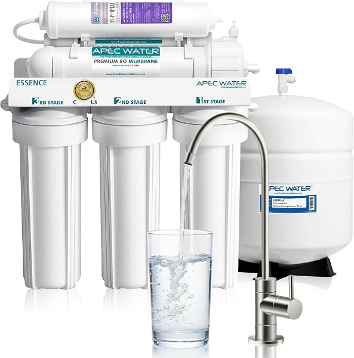
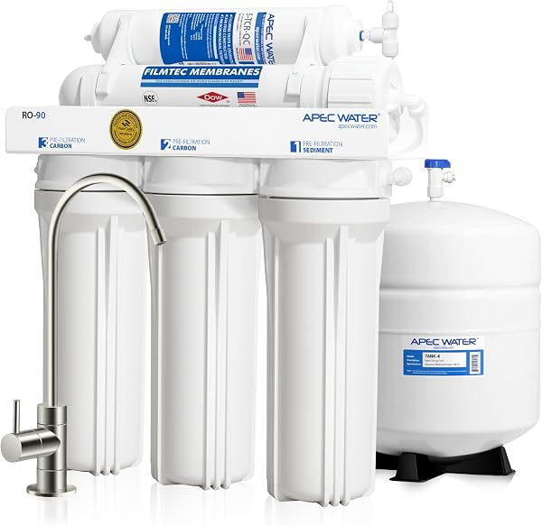

APEC Reverse Osmosis Review 2026: ROES-50, RO-90, ROES-PH75 & Ultimate Compared
PureFlow Lab is reader-supported. We may earn a commission when you buy through links in this guide — at no extra cost to you. As an Amazon Associate, we earn from qualifying purchases. See our Disclosure for details.
Top Picks (At a Glance)
The APEC models covered in this overview, organized by use case. PureFlow Lab does not test products; specs and certifications below come from each product’s Amazon listing or from APEC.

APEC ROES-50 — 5-Stage, 50 GPD
APEC’s basic tank-based system: 5 stages, 50 GPD, brushed-nickel faucet and quick-connect fittings, per the listing. Replacement set is FILTER-MAX-ES50, changed every 6–24 months depending on the stage, per APEC. The listing makes no NSF or US-assembly claim for this model.
Check Price on Amazon →
APEC ROES-PH75 — 6-Stage Alkaline, 75 GPD
Adds a 6th calcium alkaline stage and a 75 GPD rating. WQA certified system per the listing, rated for feed water up to 2,000 ppm TDS at 40–85 psi. The APEC pick if you want minerals added back after the membrane.
Check Price on Amazon →
APEC RO-90 — 5-Stage, 90 GPD
A 90 GPD rating versus the ROES-50’s 50 GPD, for households that use more RO water. WQA Gold Seal, “US assembled” and “100% US Made, NSF certified filters” per the listing; lead-free chrome faucet; max feed pressure 85 psi.
Check Price on Amazon →
APEC Ultimate RO-PERM — 5-Stage with Permeate Pump
Adds a permeate pump aimed at low-pressure homes: per the listing, 2–3x faster tank fill and up to 80% less wastewater. “Designed, engineered and assembled in USA” per the listing, with lifetime support.
Check Price on Amazon →
APEC ROES-PHUV75 — 7-Stage Alkaline + UV, 75 GPD
Adds a UV sterilizer stage on top of alkaline remineralization, 75 GPD, “designed, engineered and assembled in USA” per the listing. This listing bundles an ice-maker kit. UV matters most for water that isn’t already disinfected, such as many private wells.
Check Price on Amazon →TL;DR: APEC’s under-sink lineup is built around conventional tank-based 5- to 7-stage RO systems. For most homes the basic ROES-50 (5-stage, 50 GPD) covers drinking and cooking water. If you want minerals added back, the ROES-PH75 adds a calcium alkaline stage and a 75 GPD rating. For a bigger household, the RO-90 is rated at 90 GPD. The Ultimate RO-PERM adds a permeate pump that, per the listing, cuts wastewater by up to 80%, which makes it the APEC to consider for low water pressure. Well-water owners should look at the ROES-PHUV75 for its UV stage. See how APEC compares in our APEC vs iSpring vs Waterdrop comparison.
This page is a research-based overview of APEC’s reverse osmosis lineup, built from the product listings and APEC’s own statements. It covers what each model is documented to do, the trade-offs, and which model fits which household.
About APEC Water Systems
APEC Water Systems is a US water-treatment brand; per APEC, it has been in business for more than 20 years. Its residential lineup centers on under-sink, tank-based RO systems, with alkaline, UV and permeate-pump variants.
What the listings document across the lineup:
- A simple tank-based design. Every model here is a conventional under-sink system with a storage tank and a separate faucet. None of them needs electricity except the UV model’s UV stage.
- US assembly on some models. The RO-PERM and ROES-PHUV75 listings say “designed, engineered and assembled in USA”; the RO-90 listing says “US assembled” with “100% US Made, NSF certified filters.” The ROES-50 listing makes no such claim, so don’t assume it for every model.
- WQA certification on some models. The RO-90 carries the WQA Gold Seal and the ROES-PH75 is a WQA certified system, per their listings. None of the APEC listings linked here name an NSF/ANSI 58 certification for the complete system.
- A permeate-pump option. The Ultimate RO-PERM uses a permeate pump to reduce wastewater and speed tank fill, per the listing.
What APEC’s lineup here doesn’t offer: tankless design and smart features. None of the APEC listings linked on this page mention an app, a TDS display, or leak detection. If those matter to you, look at Waterdrop (tankless, smart faucet) or Express Water (leak detector included on several models).
A Note on APEC’s Model Names
APEC’s model names describe the configuration:
- ROES-50 — 5-stage, 50 GPD base system. (A separate ROES-50X listing is the same system sold with an extra filter set.)
- ROES-PH75 — adds a 6th calcium alkaline stage and a 75 GPD rating.
- RO-90 — 5-stage, 90 GPD.
- ROES-PHUV75 — alkaline plus UV, 7 stages, 75 GPD.
- Ultimate RO-PERM — 5-stage with a permeate pump.
Some APEC models are also sold in bundles (for example with an ice-maker kit). Check the listing title before you buy so you know what is in the box.
Top Picks Detailed
Best Overall: APEC ROES-50
The APEC ROES-50 is the simplest system in the lineup and the right starting point for most homes. Per the listing, it is a 5-stage, 50 GPD tank-based system with a brushed-nickel faucet and quick-connect fittings. The replacement filter set is FILTER-MAX-ES50, and APEC says the filters are replaced every 6–24 months depending on the stage.
What the listing does not say matters too: it makes no NSF certification claim and no “Made in USA” claim for this model. If certification or US assembly is a priority, the RO-90 (WQA Gold Seal, US assembled per its listing) or RO-PERM (assembled in USA per its listing) are the APEC models that document them.
The trade-offs are the standard tank-based ones: the storage tank takes under-sink cabinet space, and a 50 GPD membrane refills more slowly than a higher-rated or tankless system. For a typical household’s drinking and cooking water, 50 GPD is usually enough.
Pros: Simple 5-stage design, no electricity needed, quick-connect fittings, APEC publishes a filter-replacement schedule. Cons: Tank-based (takes cabinet space), 50 GPD refills more slowly, no alkaline stage, the listing makes no NSF or US-assembly claim.
Best Alkaline: APEC ROES-PH75
The APEC ROES-PH75 adds a 6th calcium alkaline stage that puts some minerals back into the water after the RO membrane removes them. Some people find plain RO water flat; remineralization is the usual fix. Per the listing it is rated at 75 GPD, is a WQA certified system, handles feed water up to 2,000 ppm TDS, and needs 40–85 psi feed pressure. It is sold by Advanced Water (APEC).
The closest alternative is the iSpring RCC7AK, a 6-stage alkaline system that is certified to NSF/ANSI 58 for the whole system per its listing and uses a top-mounted faucet. Compare them in our comparison.
Pros: Calcium alkaline stage, 75 GPD rating, WQA certified system per the listing, documented feed-water limits. Cons: One more filter stage to replace over time, tank-based, needs at least 40 psi feed pressure.
Best High-Flow: APEC RO-90
The APEC RO-90 is a 5-stage system rated at 90 GPD, compared with 50 GPD for the ROES-50. For a larger household that uses RO water for cooking as well as drinking, the higher rating means the tank refills faster.
It is also the APEC model with the most documented credentials on its listing: WQA Gold Seal, “US assembled,” “100% US Made, NSF certified filters,” and a lead-free chrome faucet. Maximum feed pressure is 85 psi per the listing, so homes with higher pressure need a pressure regulator. If your household is small, the ROES-50’s 50 GPD is likely enough.
Pros: 90 GPD rating, WQA Gold Seal and US assembly per the listing, lead-free chrome faucet. Cons: More capacity than small households need, tank-based, 85 psi maximum feed pressure.
Best Efficiency: APEC Ultimate RO-PERM (Permeate Pump)
The APEC Ultimate RO-PERM targets reverse osmosis’s biggest weakness: wastewater. Conventional tank-based RO systems send several gallons to the drain for each gallon of purified water, and the ratio gets worse at low pressure and as the tank fills. A permeate pump is a non-electric device that uses the drain-water flow to push purified water into the tank, so the membrane isn’t working against tank back-pressure.
Per the listing, the RO-PERM fills its tank 2–3x faster and produces up to 80% less wastewater, and it is aimed at low-pressure homes. It is “designed, engineered and assembled in USA” per the listing and comes with lifetime support. It is the APEC to consider if your water pressure is low or if you are on a well and every wasted gallon costs pumping.
Pros: Up to 80% less wastewater and 2–3x faster tank fill per the listing, no electricity, assembled in USA per the listing, lifetime support. Cons: One more component to install, still tank-based (takes cabinet space).
Best for Well Water: APEC ROES-PHUV75
The APEC ROES-PHUV75 combines alkaline remineralization with a UV sterilizer stage: 7 stages, 75 GPD, “designed, engineered and assembled in USA” per the listing. Note that this listing bundles an ice-maker kit.
UV adds a disinfection step aimed at microorganisms. City water is already disinfected, so UV is mostly relevant for untreated sources such as private wells. If you’re on a well, get the water checked by a certified lab first and read our whole house RO guide: well water often needs upstream treatment (sediment, iron, hardness) to protect any RO membrane. The UV stage needs electricity, and the lamp is an extra part to maintain; check APEC’s replacement schedule.
Pros: UV stage for untreated water, alkaline remineralization, assembled in USA per the listing, ice-maker kit included. Cons: Needs an outlet for the UV stage, UV lamp is an extra maintenance item, well water may need pre-treatment the system doesn’t include.
What Sets APEC Apart
Three things distinguish APEC’s lineup on paper:
1. Simple, conventional design. Tank-based systems with standard stages and no electronics (except the UV model). There is less to go wrong electrically, and no power outlet is needed under the sink for most models.
2. Documented US assembly on several models. The RO-PERM, ROES-PHUV75 and RO-90 listings all state US assembly. Check the individual listing, because the ROES-50 listing does not.
3. The permeate-pump option. The Ultimate RO-PERM reduces wastewater by up to 80% per the listing, without electricity and without switching to a tankless design.
What APEC Could Do Better
Three weaknesses to weigh:
1. The lineup here is tank-based. All of the APEC models on this page use a storage tank. If you want a tankless system that frees up cabinet space and produces water on demand, Waterdrop is the brand to look at.
2. No smart features. None of the APEC listings here mention an app, leak detection, or a TDS display. If you want monitoring, pair any system with a separate leak-stop valve and a handheld TDS meter, or look at a tankless system with a smart faucet.
3. Certification claims vary by model. The RO-90 and ROES-PH75 list WQA certification; the ROES-50 listing lists none; none of these listings name NSF/ANSI 58 for the whole system. If a whole-system NSF/ANSI 58 certification matters to you, compare the iSpring RCC7AK or Waterdrop G3P600, which list it.
APEC vs Competitors
vs iSpring RCC7AK: The closest head-to-head. iSpring’s RCC7AK is a 6-stage, 75 GPD alkaline system certified to NSF/ANSI 58 for the whole system, with a top-mounted faucet that installs from above, per the listing. APEC’s ROES-PH75 counters with a WQA-certified system and documented feed-water limits. See the full breakdown in our APEC vs iSpring vs Waterdrop comparison.
vs Waterdrop G3P600: APEC is tank-based and electronics-free; the Waterdrop G3P600 is a 600 GPD tankless system with a 2:1 pure-to-drain ratio, certified to NSF/ANSI 58 and 372 per the listing, and it needs an outlet under the sink. APEC’s permeate-pump RO-PERM narrows the wastewater gap. APEC for simplicity; Waterdrop for tankless flow and a smart faucet.
vs Express Water 5-stage: Express Water’s 5-stage system is also a 50 GPD tank-based design, and per its listing it includes an extra filter set and a leak detector. APEC’s higher-end models counter with WQA certification and US assembly per their listings. Compare current prices on both.
For the full field, see our best reverse osmosis systems guide.
Comparison Table
| Model | Stages | GPD | Standout Feature | Certification / origin (per listing) |
|---|---|---|---|---|
| ROES-50 | 5 | 50 | Basic tank-based system | None stated |
| ROES-PH75 | 6 | 75 | Calcium alkaline stage | WQA certified system |
| RO-90 | 5 | 90 | Higher flow for big households | WQA Gold Seal; US assembled |
| Ultimate RO-PERM | 5 | Not stated | Permeate pump, up to 80% less waste | Assembled in USA |
| ROES-PHUV75 | 7 | 75 | Alkaline + UV (well water) | Assembled in USA |
Buyer Scenario Decision Matrix
Match your situation:
| Your Situation | Right APEC Pick | Why |
|---|---|---|
| First RO system, want something simple | ROES-50 | Basic 5-stage, 50 GPD, no electricity |
| Want minerals added back | ROES-PH75 | Calcium alkaline stage |
| Large household, want faster refill | RO-90 | Rated at 90 GPD vs 50 GPD |
| Low water pressure or want less RO waste | Ultimate RO-PERM | Permeate pump: up to 80% less waste per the listing |
| On well water | ROES-PHUV75 | Adds a UV disinfection stage |
| Want tankless + smart features | Look at Waterdrop instead | APEC’s models here are tank-based |
| Want a leak detector in the box | Compare Express Water | Several Express Water listings include one |
| Want RO at every tap in the house | Look elsewhere — see our whole house RO guide | APEC’s models here are point-of-use |
FAQ
Is APEC a good reverse osmosis brand?
APEC is a long-running US brand (more than 20 years in business, per APEC) that focuses on conventional tank-based under-sink RO. Several models document WQA certification and US assembly on their listings, and the RO-PERM offers a permeate pump for efficiency. The trade-offs: the models here are all tank-based, none have smart features, and certification claims vary by model. PureFlow Lab does not test products; check the listing for the specific model you’re considering.
Is the APEC ROES-50 worth it?
It’s a reasonable choice if you want a simple 5-stage, 50 GPD tank system for drinking and cooking water. Be aware that the ROES-50 listing makes no NSF or US-assembly claim. If documented certification matters, compare the RO-90 (WQA Gold Seal) or an NSF/ANSI 58-certified system such as the iSpring RCC7AK.
What’s the difference between the APEC ROES-50 and ROES-PH75?
The ROES-50 is a 5-stage, 50 GPD system. The ROES-PH75 adds a 6th calcium alkaline stage and a 75 GPD rating, and is a WQA certified system per its listing. If you’re happy with plain RO water, the ROES-50 is enough; if you want minerals added back, choose the ROES-PH75.
What is the APEC permeate pump and is it worth it?
The permeate pump in the Ultimate RO-PERM is a non-electric device that, per the listing, fills the tank 2–3x faster and cuts wastewater by up to 80%. It’s most worthwhile if you have low household water pressure or you’re on a well and want to waste less water. For a home on city water with good pressure, the basic ROES-50 does the job.
Where are APEC systems made?
It depends on the model. The RO-PERM and ROES-PHUV75 listings say “designed, engineered and assembled in USA,” and the RO-90 listing says “US assembled” with “100% US Made, NSF certified filters.” The ROES-50 listing makes no origin claim. Check the listing of the exact model you buy.
Does APEC make a tankless or whole-house RO system?
The APEC models covered here are all tank-based point-of-use systems. For a tankless option, see our Waterdrop overview. For RO at every tap, see our best whole house RO systems guide.
How long do APEC filters last?
For the ROES-50, APEC says its filters (replacement set FILTER-MAX-ES50) are replaced every 6–24 months, depending on the stage and your water. Pre-filters are changed most often; the RO membrane lasts longest. For other models, follow APEC’s schedule for that model, and check the current price of the replacement set before you buy the system so you know the running cost.
Bottom Line: Which APEC Should You Buy?
For most homeowners: the APEC ROES-50. A simple 5-stage, 50 GPD tank system with a published filter schedule. Note that its listing makes no certification claim.
If you want minerals added back: the ROES-PH75 adds a calcium alkaline stage and a 75 GPD rating.
For a large household: the RO-90 is rated at 90 GPD and has the most documented credentials (WQA Gold Seal, US assembled).
If you have low water pressure or want less RO waste: the Ultimate RO-PERM cuts wastewater by up to 80% with its permeate pump, per the listing.
On well water: the ROES-PHUV75 adds a UV stage (and bundles an ice-maker kit).
If you want tankless or smart features: APEC’s models here don’t offer them; see our Waterdrop overview. For a system with a leak detector included, compare Express Water. And see how APEC compares head-to-head in our APEC vs iSpring vs Waterdrop comparison.
Ready to buy?
Check current pricing on whichever APEC system fits your situation. Your clicks keep these guides free.
Shop All APEC RO Systems on Amazon →
Found this useful? Share it with someone shopping for an RO system.
Keep Reading
- Reverse Osmosis Wastewater: Is It Really 4:1? — and how to cut it
- Best Reverse Osmosis Systems for Home — APEC compared against the main competitors
- APEC vs iSpring vs Waterdrop — three popular under-sink brands head-to-head
- iSpring Reverse Osmosis Review — APEC’s closest head-to-head rival
- Waterdrop Reverse Osmosis Review — the tankless alternative
- Express Water Reverse Osmosis Review — the budget alternative
- Whole House RO vs Under-Sink RO — decision framework
- Best Whole House Reverse Osmosis Systems — for RO at every tap